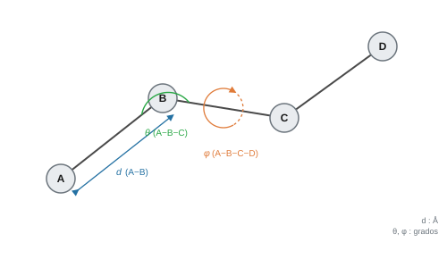
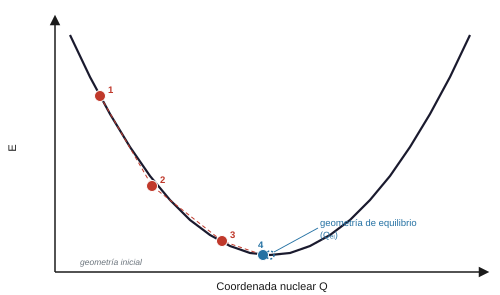

Geometría molecular y la aproximación de Born-Oppenheimer#
Introducción#
Determinar cualquier propiedad fisicoquímica en una molécula exige conocer con precisión las coordenadas espaciales de sus átomos. La aproximación de Born-Oppenheimer aprovecha la gran diferencia de masa entre núcleos y electrones para desacoplar sus movimientos, lo que permite resolver la distribución electrónica sobre disposiciones nucleares fijas. Este marco teórico fundamenta la distinción entre cálculos de energía puntual a coordenadas constantes y optimizaciones de geometría orientadas a localizar mínimos energéticos estables.
La aproximación de Born-Oppenheimer#
La masa de un protón es aproximadamente 1836 veces mayor que la del electrón, por lo que los núcleos atómicos se mueven con mucha mayor lentitud. La aproximación de Born-Oppenheimer aprovecha esta disparidad temporal tratando a los núcleos como centros de carga estacionarios mientras se resuelve el movimiento electrónico. De este modo, la energía electrónica se obtiene como una magnitud que depende paramétricamente de las posiciones nucleares elegidas. Sin este desacoplamiento, la resolución mecanocuántica de cualquier molécula resultaría computacionalmente inviable.
Nota
Al fijar los núcleos en diferentes disposiciones espaciales y calcular la energía electrónica para cada una, generamos la superficie de energía potencial (PES, Potential Energy Surface). Sobre esta superficie hiperdimensional se describe la dinámica de los núcleos, la vibración molecular y el avance de las reacciones químicas.
Geometría molecular: distancias, ángulos y diedros#
La geometría de una molécula queda definida por tres parámetros: distancias de enlace (en ángstroms, Å), ángulos de enlace (en grados) y ángulos diedros de torsión (en grados). Las distancias y los ángulos determinan la conectividad local entre átomos contiguos; los diedros describen la rotación espacial entre planos que comparten un enlace central. Gaussian usa estas coordenadas internas para calcular gradientes y optimizar geometrías. En GaussView podemos medir y visualizar los tres parámetros directamente sobre el modelo.


Energía puntual: calcular sin mover#
En un cálculo de energía puntual (Single Point), las posiciones nucleares permanecen fijas según las coordenadas del archivo de entrada. Con esa geometría constante, Gaussian resuelve la estructura electrónica sin desplazar ningún átomo. El resultado es la energía electrónica total en hartrees para esa conformación. En GaussView seleccionamos este cálculo en Job Type → Single Point (etiquetado habitualmente como Energy).
Optimización de geometría: encontrar el mínimo#
En una optimización de geometría, Gaussian calcula la energía sobre la estructura inicial y evalúa sus derivadas respecto a las coordenadas nucleares (el gradiente de la energía). Las fuerzas electrostáticas que actúan sobre cada núcleo \(A\) corresponden al gradiente cambiado de signo:
A partir de estas fuerzas, el algoritmo desplaza los núcleos en la dirección que reduce la energía hacia el mínimo más cercano. En cada nueva geometría recalcula la función de onda y las fuerzas. El proceso se repite hasta que el gradiente se anula dentro de la tolerancia numérica:
En GaussView seleccionamos este cálculo en Job Type → Optimization. La figura siguiente ilustra los pasos sucesivos del algoritmo convergiendo al pozo de potencial.


Bibliografía#
Gaussian 16, Revision A.03, M. J. Frisch, G. W. Trucks, H. B. Schlegel et al., Gaussian, Inc., Wallingford CT, 2016.
Szabo, A.; Ostlund, N. S. Modern Quantum Chemistry. Dover, 1996.
¿Qué pasa si la geometría inicial es muy mala?
Si la geometría inicial está muy alejada de la estructura de equilibrio, el algoritmo puede necesitar un número excesivo de pasos, quedar atrapado en un mínimo local o no converger. En el archivo .log, esta situación se identifica cuando se alcanza el límite de ciclos de optimización sin satisfacer los criterios de convergencia. Para evitarlo, conviene construir las moléculas empleando los fragmentos estándar de GaussView, que proporcionan distancias y ángulos iniciales químicamente razonables.
Más sobre gradientes y algoritmos de optimización
Los algoritmos de optimización por defecto en Gaussian (como el método Berny) emplean técnicas de tipo cuasi-Newton, que actualizan iterativamente una aproximación del hessiano (la matriz de segundas derivadas) para proyectar el desplazamiento hacia el mínimo. Como cada ciclo exige calcular la función de onda y el gradiente completo, optimizar moléculas grandes o conformacionalmente flexibles puede requerir un coste computacional elevado y decenas de pasos de optimización.